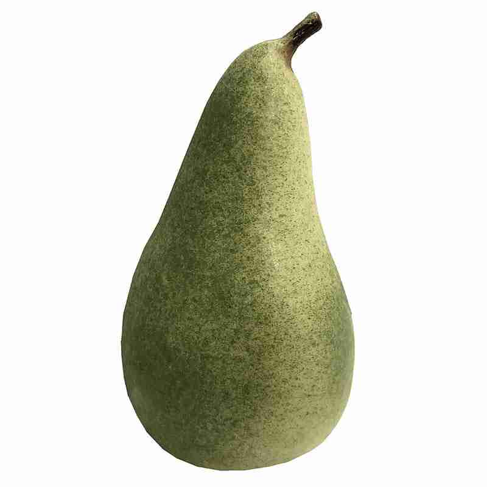
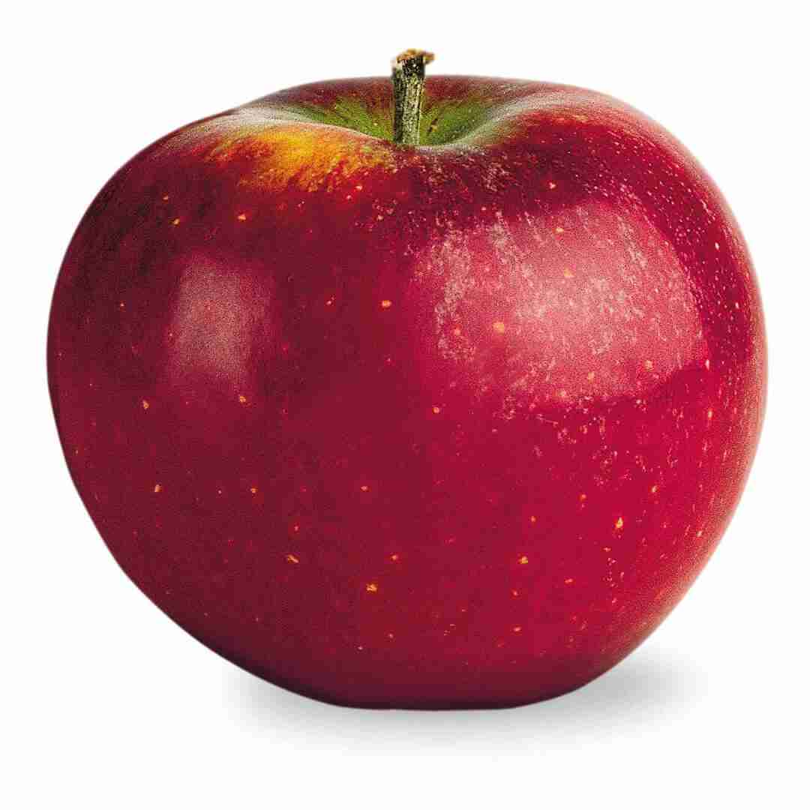

Planterne på HV8
Løgplante
Påskelilje, Flower Record
| Plante, Sort | Påskelilje, Flower Record |
| Plantetyper | Løgplante |
| Art | Narcissus |
| Farve | ⚪️ 🟡 |
| Fler-, etårig | flerårig |
| Såtidspunkt | Sep-Dec |
| Blomstring | Marts-April |
| Høsttid | |
| Beskæring | |
| Placering |

Tekst til foto (ICK) (IMG_6874.jpg)
Påskelilje, Shrike
| Plante, Sort | Påskelilje, Shrike |
| Plantetyper | Løgplante |
| Art | Narcissus |
| Farve | Creme, koral |
| Fler-, etårig | flerårig |
| Såtidspunkt | |
| Blomstring | Maj |
| Høsttid | |
| Beskæring | |
| Placering |
Træ
Pære
| Plante, Sort | Pære |
| Plantetyper | Træ |
| Art | |
| Farve | |
| Fler-, etårig | |
| Såtidspunkt | |
| Blomstring | |
| Høsttid | |
| Beskæring | |
| Placering |

Pære (NA) (paerer-groen-kunstig-mad.jpg)
Æble
| Plante, Sort | Æble |
| Plantetyper | Træ |
| Art | |
| Farve | |
| Fler-, etårig | |
| Såtidspunkt | |
| Blomstring | |
| Høsttid | |
| Beskæring | |
| Placering |

Ingrid Marie (NA) (aeble_ingrid-marie_frit.jpg)